Sri Lanka ODI Team
1996 ODI World Cup champions with spin bowling strength.
About Sri Lanka ODI Team
Country: Sri Lanka
Home Ground: Various (e.g., R. Premadasa Stadium, Colombo)
Captain: Kusal Mendis
Coach: Mahela Jayawardene
Sri Lanka’s ODI team has a rich history, with a memorable 1996 World Cup victory and strong spin bowling.
Sri-Lankan Players
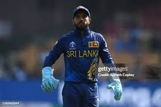
Kusal Mendis (C)
Captain, wicketkeeper-batsman.
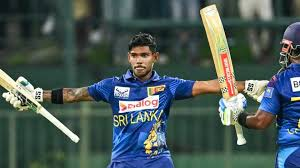
Pathum Nissanka
Batsman, reliable opener.
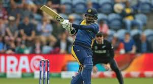
Dimuth Karunaratne
Batsman, steady opener.
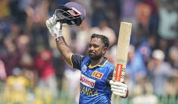
Charith Asalanka
Batsman, middle-order anchor.
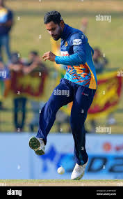
Dhananjaya de Silva
All-rounder, off-spinner.
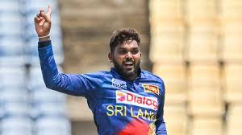
Wanindu Hasaranga
All-rounder, leg-spinner.
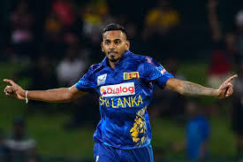
Dushmantha Chameera
Bowler, pace bowler.
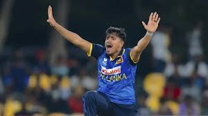
Maheesh Theekshana
Spinner, mystery bowler.
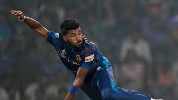
Dilshan Madushanka
Bowler, swing specialist.
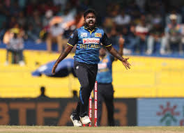
Asitha Fernando
Bowler, pace bowler.
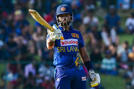
Sadeera Samarawickrama
Wicketkeeper-batsman, middle-order.